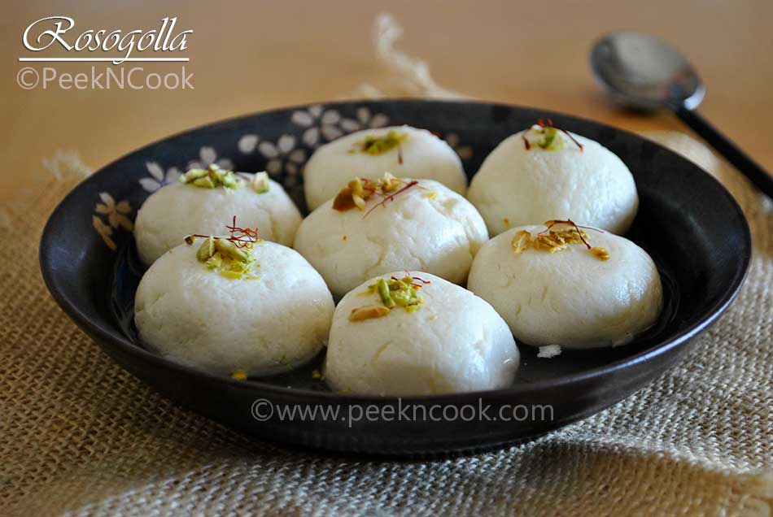

Home
Rosogolla

Description
Rosogolla is a soft, spongy Bengali sweet made from chhena and soaked in sugar syrup, loved for its melt-in-the-mouth texture
Ingredients
- Chhena (paneer/cottage cheese)-> 1 cup
- Sugar -> 2 cups
- Water -> 4 cups
- Cardamom pods (optional) -> 2-3
- Lemon juice or vinegar -> 2 tbsp (to curdle milk)
- Milk -> 1 liter
Steps
- Boil milk and add lemon juice/vinegar to curdle it.
- Strain chhena using a muslin cloth and rinse with cold water.
- Knead the chhena until smooth and form small, round balls.
- Prepare sugar syrup by boiling water and sugar, adding cardamom for flavor.
- Boil chhena balls in the syrup for 15-20 minutes until they double in size.
- Let them cool and soak in the syrup before serving.
Enjoy your Rosogolla